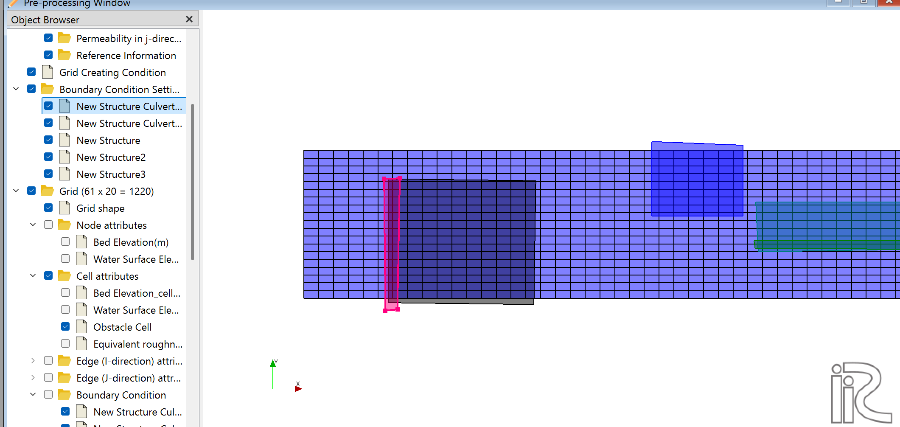
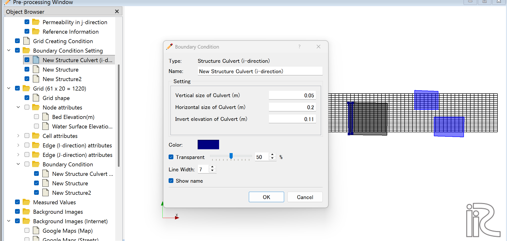
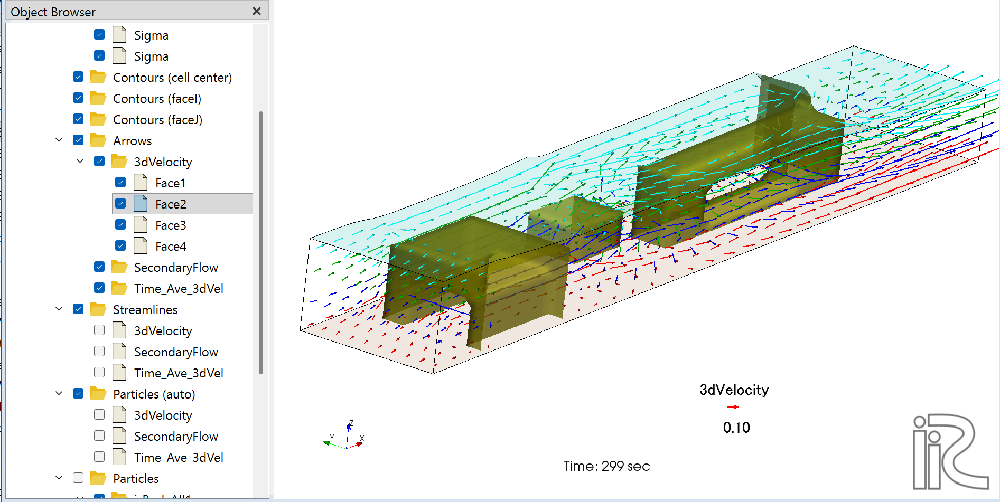

構造物カルバート (Structure Culvert)¶
概要¶
Structure Culvert BCは、Structure BC で設定した構造物の壁面に暗渠（カルバート）の開口部を定義する境界条件です。
格子のi方向に貫通する Structure Culvert (i-direction) と、j方向に貫通する Structure Culvert (j-direction) の2種類があります。
flowchart LR
U["上流 upstream"] -->|" 流れの方向 "| STR
subgraph STR["Structure body"]
C["culvert opening"]
end
STR -->|" 流れの方向 "| D["下流 downstream"]前提条件¶
Structure BC が必須です
Structure Culvert BC を設定するには、同じ場所に Structure BC が先に設定されていることが必要です。
カルバートのエッジ（格子線）は、Structure BC が適用されたセルの境界面上に配置してください。 Structure BC が設定されていない壁面にカルバートを設定しようとすると、計算実行時にエラーが発生します。
i方向カルバート (Structure Culvert i-direction)¶
格子のi方向（主流方向に相当することが多い）に構造物を貫通するカルバートです。
設定手順¶
ステップ 1：境界条件の追加¶
左パネルの Boundary Condition Setting を右クリックし、Structure Culvert (i-direction) を選択して新規グループを追加します。追加後は左パネルに New Structure Culvert (i-direction) として表示されます（前ページの画像参照）。
ステップ 2：カルバートエッジの選択¶
追加したグループを選択し、エッジ選択ツールで構造物の壁面となるi方向の格子エッジを1本選択します。選択されたエッジはピンク色でハイライト表示されます。

上図では、左側の Structure 本体（濃色）の左端境界面にカルバートエッジ（ピンク色）が選択されています。
エッジの選択に関する注意
選択するエッジは、Structure BC が設定されたセルの境界面（エッジ）でなければなりません。 Structure セルの外側のエッジを選択するとエラーになります。
ステップ 3：カルバートパラメータの設定¶
| パラメータ | 単位 | 説明 |
|---|---|---|
| Vertical size of Culvert | m | カルバートの鉛直サイズ（高さ） |
| Horizontal size of Culvert | m | カルバートの水平サイズ（幅） |
| Invert elevation of Culvert | m | カルバート底板の絶対標高 |

上図の設定例：Vertical size = 0.05 m、Horizontal size = 0.2 m、Invert elevation = 0.11 m
パラメータと標高の関係（高い順）:
| 高さ（高い → 低い） | 意味 |
|---|---|
| 水面 | 計算水位 |
| Structure Top Elevation | 構造物天端（ここまで Structure が固体） |
| Invert elevation + Vertical size | カルバート上端 |
| ↕ Vertical size | カルバート開口部の高さ |
| Invert elevation | カルバート底板（底部標高） |
| eta | 河床高さ |
ステップ 4：重要な制約の確認¶
カルバートの上部に固体部分（Structure本体）を残すには：
必須条件
Structure Top Elevation > Invert elevation + Vertical size
設定例（正しい）:
- Invert elevation = 0.100 m
- Vertical size = 0.300 m → カルバート上端 = 0.400 m
- Structure Top Elevation = 0.500 m ✓（上部に 0.100 m の固体あり）
設定例（誤り）:
- Invert elevation = 0.100 m
- Vertical size = 0.300 m → カルバート上端 = 0.400 m
- Structure Top Elevation = 0.350 m ✗（カルバートが天端を突き抜ける）
j方向カルバート (Structure Culvert j-direction)¶
格子のj方向に構造物を貫通するカルバートです。設定方法はi方向と同様です。
Boundary Conditions から Structure Culvert (j-direction) を選択し、j方向の格子エッジを指定してください。
よくあるエラーと対処法¶
エラー 1：カルバートが Structure 面上にない¶
ERROR: Structure Culvert (i-direction) face at( i j ) group N
is not on a Structure face. Calculation stopped.
原因: 選択したカルバートエッジが、Structure BC が設定されているセルの境界面上にありません。
対処法:
- iRICで Structure BC が設定されているセルを確認する
- Structure Culvert BC の設定を開き、エッジを Structure セルの境界面に再配置する
確認のポイント
iRIC前処理でグリッドを拡大表示し、カルバートのエッジが Structure BC（青色ハイライト）の 境界面上（内側の辺）に乗っているかどうかを確認してください。
エラー 2：カルバートが天端を超えている（構造上の問題）¶
エラーは出ないが、カルバート上部の構造物が存在しない・薄すぎるケース。
確認方法: 3D表示でカルバート上部の固体部分の厚さを確認してください。
対処法: Structure Top Elevation を Invert elevation + Vertical size より大きい値に修正してください。
3D可視化での確認¶
計算後、ポスト処理の3D表示で次の点を確認してください。
- カルバート開口部に流速ベクトルが表示されているか
- カルバート上部に固体部分（Structure本体）が存在するか
- カルバートを通過した流れが下流で正しく再現されているか

上図はijStructureテストケースの定常計算結果（299 sec）です。上流側の Structure にカルバートが設定されており、底層付近でカルバートを通過する流れ（赤矢印）と、天端を越流する流れ（シアン矢印）が3次元的に表現されています。下流側の Structure は越流のみ（カルバートなし）の配置です。